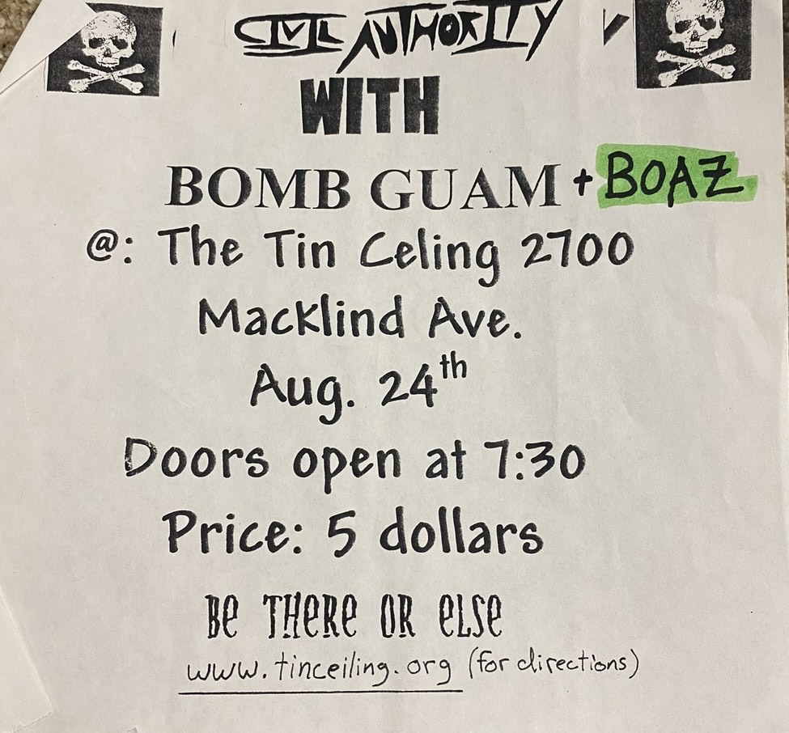

I started playing the drums in 3rd grade. My mom bought me a kit and got me lessons that I hated. My teacher insisted I use traditional grip on the my drumsticks, which most jazz drummers use instead of match grip, which you'll see most rock drummers use. And I wanted to be a rock star
So, I stopped taking lessons, and started working on my own. I would just throw on my headphones and, start playing along with my favorite bands like Weezer and Red Hot Chili Peppers and Foo Fighters . Instead of learning paradiddles (which I would learn how important they are later in life) , I was figuring out on my own how I could mimic the parts they were playing. It certainly didn't make me the same time of technical drummer continuing with lessons would have, but what it did do was give me an excellent sense of time. Something, that I've learned over 30 years of playing drums is that you can be the most creative technical drummer in the world, but if you don't have time, its all meaningless .
In high school, I started playing in my first real band. We weren't very good, but we had alot of fun and started playing real shows at real clubs.
This is a flyer for the first show I ever played
All of a sudden, we were making $100 for each show and I felt like a professional musician, even if I still wasn't very good. It took me another 10 years before I finally realized that I had reached the ceiling of skill I could accomplish on my own, and started taking lessons again as an adult.
After taking lessons as an adult for a year, I was ten times the drummer I was, but I couldn't have have made that same time of progress without practicing so much on my own, palying along my favorite bands. Music has always been, and always will be a huge part of my life...from playing it, to appreciating it. I hate to think how boring the world would be without music.